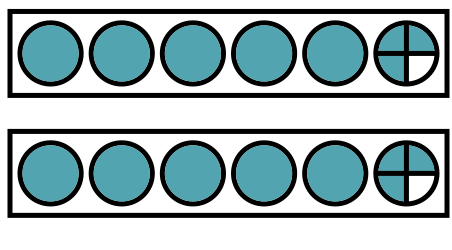
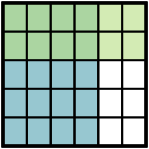
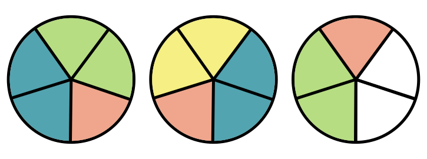
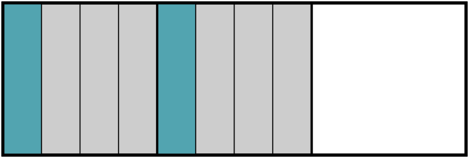

Visual Fraction Library
Use Visual Fraction Library to Generate Customizable Visual Models of...
with Circles or Bars
- Group Models 
- Area Models 
- when the dividend is larger 
- or when the divisor is larger 